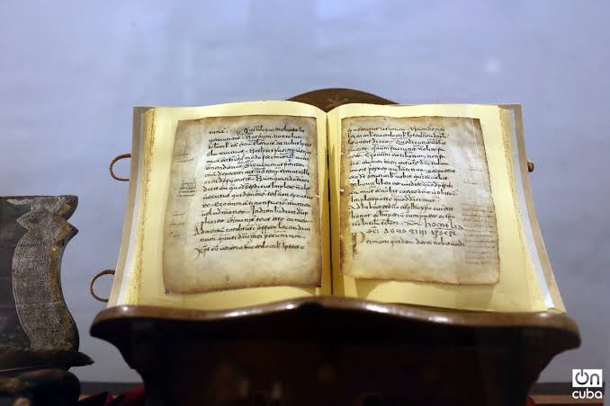
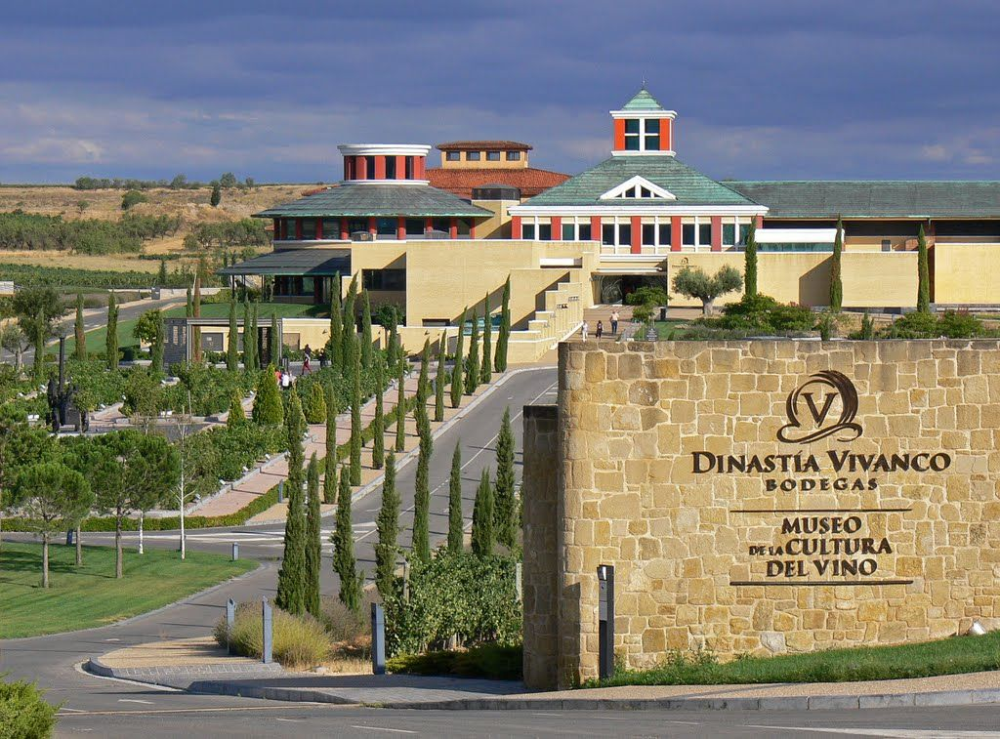
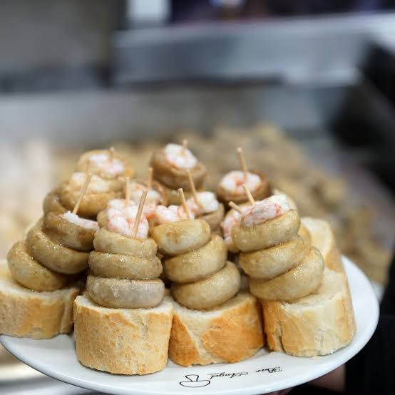

Une région d'exception
Logroño, capitale conviviale de La Rioja, est le point de départ idéal pour explorer les vignobles, les monastères classés à l'UNESCO, les villages médiévaux et les bodegas prestigieuses. Entre pintxos, vins d'exception et paysages enchanteurs, cette escapade offre une immersion totale dans l'une des régions les plus fascinantes d'Espagne.
Le voyage en un coup d'œil

🏛️ Logroño
- Cocathédrale Santa María de la Redonda
- Pont de Pierre sur l'Ebre
- Calle Laurel, rue des pintxos
- Chemin de Compostelle

📜 San Millán de la Cogolla
- Monastères de Suso et Yuso
- Berceau de la langue espagnole
- Glosas Emilianenses
- Classé UNESCO

🍷 Musée Vivanco
- 4 000 m² d'expositions immersives
- Art & Vin : Sorolla, Picasso, Dalí
- Jardin de Bacchus, 220 cépages
- Dégustation de vins d'exception

🏗️ Marqués de Riscal
- Architecture iconique de Frank Gehry
- Bodegas Valdelana, caves du 15ème siècle
- Jardin des cépages
- Dégustation vins & huiles d'olive

🏰 Laguardia
- Cité fortifiée médiévale
- Horloge-carillon, spectacle unique
- Portail polychrome, joyau artistique
- Dolmen Alto de la Huesera

🍽️ Gastronomie riojane
- Cocinillas con camarón
- Matrimonio : anchois & boquerones
- Foie gras, signature locale
- Pintxos variés et créatifs
Les vignobles de La Rioja
Entre Rioja Alta, Alavesa et Baja, des paysages viticoles d'exception classés parmi les plus beaux d'Espagne. Le tempranillo y règne en maître.
Votre itinéraire jour par jour
Jour 1 · Arrivée à Logroño
Installation et découverte
Arrivée à Logroño et installation dans votre duplex premium de 140 m² au cœur du centre historique. À deux pas des rues Laurel et San Juan, les artères emblématiques des pintxos.
Première immersion dans la Calle Laurel
Première soirée dans la rue la plus célèbre d'Espagne pour les tapas : cocinillas con camarón, matrimonio, foie gras et pintxos variés, arrosés d'un verre de rioja.
Jour 2 · UNESCO & patrimoine
San Millán de la Cogolla
Route vers le berceau de la langue espagnole. Monastère de Suso : les Glosas Emilianenses, premiers mots écrits en castillan. Monastère de Yuso : bibliothèque et manuscrits exceptionnels. Ensemble monastique classé patrimoine mondial de l'UNESCO.
Santo Domingo de la Calzada
Cathédrale, légende du Coq et de la Poule, Chemin de Saint-Jacques de Compostelle. Crypte et tombeau de Saint Dominique, tour-clocher isolée, Place d'Espagne. Déjeuner dans une brasería traditionnelle.
Dîner à Logroño
Retour à Logroño pour un dîner dans un restaurant traditionnel de la Calle Laurel ou San Juan. Dégustation de spécialités riojanes : artichauts, carpaccio de charcuterie, et vins de la région.
Jour 3 · Vin & architecture
Musée Vivanco à Briones
Visite du musée du vin le plus prestigieux au monde : 4 000 m² d'expositions immersives, art et vin (Sorolla, Picasso, Miró, Dalí), jardin de Bacchus avec 220 cépages du monde. Dégustation de vins d'exception.
Elciego & Marqués de Riscal
Découverte de l'architecture iconique de Frank Gehry au domaine Marqués de Riscal. Bodegas Valdelana, caves du 15ème siècle, jardin des cépages. Déjeuner avec dégustation de vins et huiles d'olive d'exception.
Laguardia & Peñacerrada
Laguardia, cité fortifiée médiévale : horloge-carillon, spectacle unique, portail polychrome, joyau artistique. Dolmen Alto de la Huesera, site mégalithique. Balcon de La Rioja à Peñacerrada pour les panoramas.
Dîner à Labastida
Restaurant typique à Labastida pour une dernière soirée riojane. Dégustation de spécialités locales et vins de la Rioja Alavesa.
Jour 4 · Retour
Dernière promenade à Logroño
Une matinée volontairement légère pour quitter Logroño sans précipitation : dernière promenade le long de l'Ebre, dernier café dans un café typique, derniers achats de vins.
Déjeuner et route du retour
Déjeuner sur la route du retour, avec les images des vignobles et des villages médiévaux en tête.
Laguardia, joyau de la Rioja Alavesa
Cité fortifiée médiévale perchée sur une colline, Laguardia offre panoramas, ruelles pavées et caves souterraines. Un village classé parmi les plus beaux d'Espagne.
Votre hébergement
🏠 Duplex premium
140 m² au cœur du centre historique de Logroño, à deux pas des rues Laurel et San Juan.
🛏️ 4 chambres
Confort optimal avec 2 salles de bains. Idéal pour un groupe de 4 à 8 personnes.
🍷 Emplacement idéal
À quelques pas des meilleures adresses de pintxos et des caves du centre historique.
✨ La philosophie VPDVOYAGES
- Sélection : Des étapes qui ont du sens dans le rythme global
- Équilibre : Culture + gastronomie + vins + patrimoine
- Personnalisation : Le programme évolue selon vos envies
La Rioja, avec son mélange unique de vignobles d'exception, de patrimoine classé à l'UNESCO et de gastronomie raffinée, promet une escapade vibrante et authentique.
Votre itinéraire sur la carte
De Logroño à Laguardia, en passant par San Millán et Briones : cliquez sur chaque point doré pour découvrir les étapes de votre escapade.
Bon séjour dans La Rioja !
Histoire, Vin et Architectures · Escapade de 4 jours · Logroño & Rioja Alavesa
Parlons de votre projet →